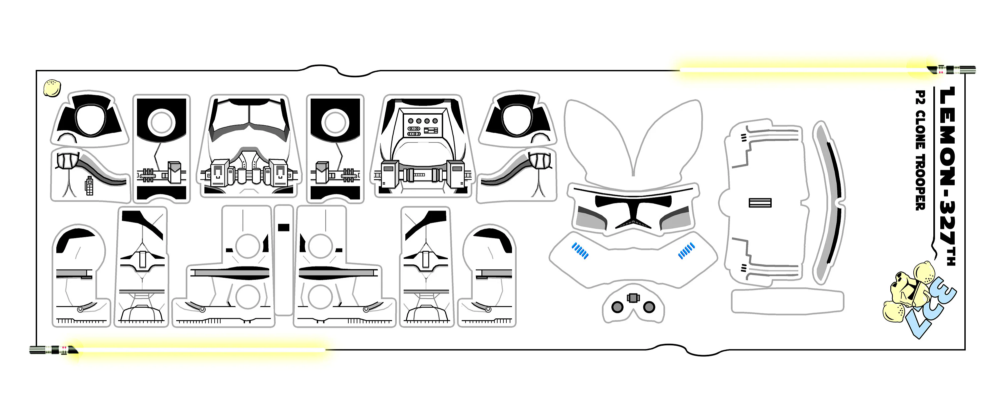
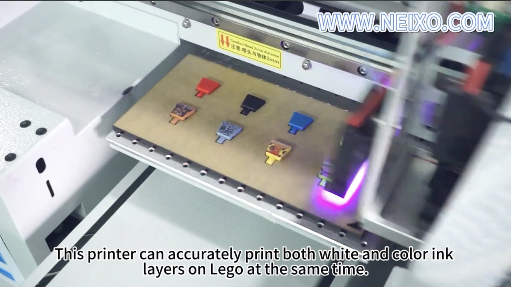
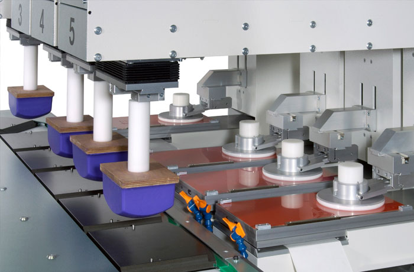
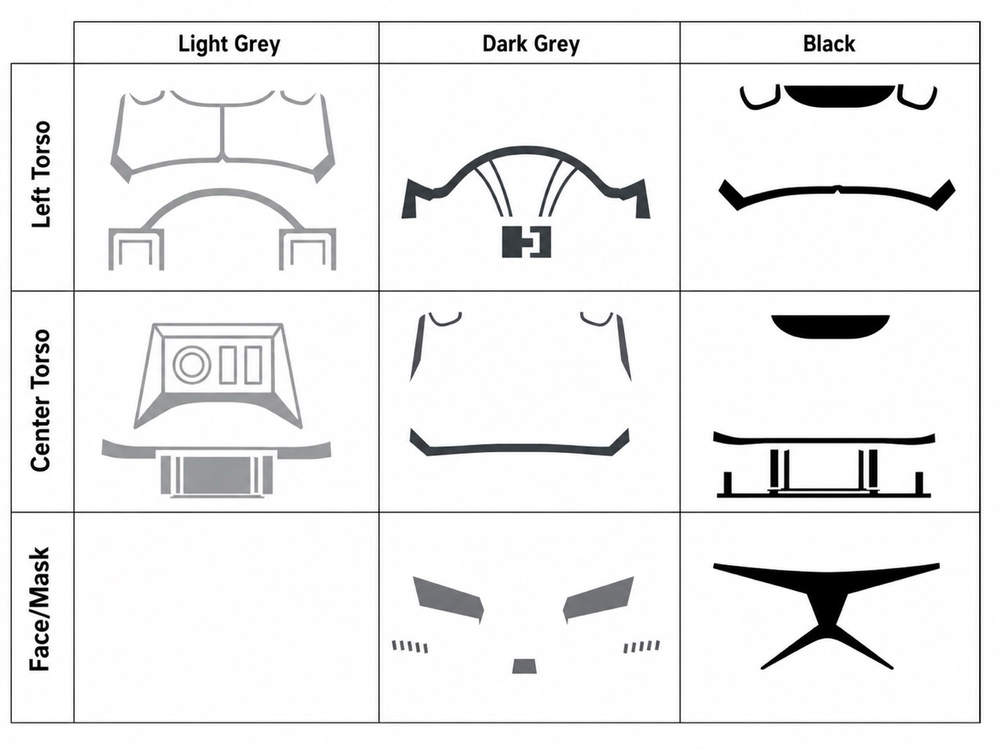

There are cathedrals everywhere for those with the eyes to see
A Portal Back in Time
If you’re anything like me, or like the millions of children who spent their childhood playing with Legos, you’ve probably had your interest piqued recently by a Lego set sitting on a store shelf. If you gave in and now own a new Lego set, a toy you may not have touched since childhood, you are far from the only one. It is not just you and me, either. Since 2020, Lego has become increasingly popular amongst adults, and it seems to only be getting more popular (1).
After freshman year of college, I came home with an urgent need to cleanse my room of all its grade school artifacts. I tore through drawers, shelves, and storage boxes with the strange efficiency that nostalgia sometimes produces, half sentimental and half ruthless. In one of those boxes, I found a plate filled with Lego minifigures. Almost instantly, I was brought back to a more distant version of my life, one where I seemingly had no worries. I saw myself in my basement a decade earlier, staging imaginary fights between minifigures and swooshing around spaceships that I had frankensteined from multiple sets.
Out of curiosity, I used Google Images (pre GPT!), to search up my figures. To my absolute surprise, they were worth much more than when I had originally bought them. Some were worth more than the sets they came in, even accounting for inflation. I was fascinated. What was going on here? At first, I figured I could make some spare cash and invest it. Instead, that search sent me into the Lego economy, where nostalgia, scarcity, design, and condition all seemed to matter at once.
The more closely I looked at each minifigure to determine its condition, the more fascinated I became by the designs themselves. Many of them came from non Lego IP, and I was hugely into Star Wars The Clone Wars when I was younger. What struck me was not just that the characters were recognizable. It was that each one had been translated into a completely different visual language while still feeling internally consistent. A face, a torso, a helmet, a few printed lines, and somehow the character remained legible. I came to know this as the “Lego design philosophy,” a disciplined form of simplification that makes something specific feel universal.
Renewed Interest
By chance, my friend introduced me to custom Lego figures, which he had just started collecting at the time. The premise is simple. People buy blank Lego parts, usually torsos, heads, legs, helmets, and accessories. They create their own designs in Adobe Illustrator or another digital design program, then find some way to apply those designs onto the figure. Gone were the days of drawing on figures with Sharpie and creating play-doh hair. People had taken customization to another level, using modern printing techniques to make figures that could plausibly sit beside official ones. That discovery became the start of my 2 year and ongoing hobby of collecting and making custom Lego figures, a hobby so niche, yet rich in technical depth and history.
In the custom minifigure world, people often create designs that Lego would likely never make, usually to fill gaps in an existing collection. Sometimes these are obscure characters. Sometimes they are alternate costumes, specific armor variants, or designs too niche, too complicated, or too legally inconvenient for official production. Custom Lego manufacturing has been its own niche since the early 2010s. Once people moved beyond drawing directly onto the figures, one of the first major improvements was the use of laser printed waterslide decals.
Watermark Decals
This process is cleaner than hand drawing, but it is still very much manual. First, the customizer has to draw the design digitally. Then the design is printed onto special decal paper. Once the sheet is ready, each individual section has to be cut out using an exacto knife, usually one piece for each printable surface of the minifigure. A torso may need one decal for the front and one for the back. Legs may need separate decals for the hips, thighs, and sides. Arms, helmets, and accessories add even more surfaces. Here is an example of a decal sheet below:

After the decal is applied, the figure has to be sealed with a clear coat. This is necessary because the decal is still, at its core, a thin piece of printed film. Without protection, it can peel, tear, or wear away over time. The final result can look impressive, especially from a distance, but the process demands patience. A novice decaler will more than likely go through multiple copies of the same sheet before getting a clean application and seal.
Decals are efficient in one sense, since the printed sheets can be produced in quantity, but the labor does not disappear. The cutting, positioning, smoothing, drying, and sealing all happen by hand. That tradeoff is important because it explains why the custom figure community kept moving toward more direct methods of production. The obvious question becomes: if the design exists digitally, why not print it directly onto the plastic?
Ultraviolet Printing
This is where UV printing enters the picture. UV printing is widely used across many types of products, not just custom Lego minifigures. You may have encountered it before if you have ever “made your own custom minifigure” at one of the Lego stores with a customization station. The printer applies UV curable ink directly onto the part, and the ink is cured almost immediately by ultraviolet light. Within a few print and curing passes, a digital design can become a fully printed figure in minutes. The picture below shows Lego torsos arranged on a UV printer bed, in the process of printing and curing.

The appeal of UV printing is obvious. It is fast, repeatable, and scalable. Multiple figures, shown above, can be arranged across a print bed and printed in the same session. Compared with decals, UV printing dramatically reduces the amount of hand labor required for each figure. It also allows for crisp, colorful designs without the physical fragility of applied film. For small custom runs, it is a huge leap forward.
But UV printing is not the same process Lego uses for official minifigures. That distinction tends to surprise people. The “custom” figures made in official Lego stores may feel official because they are made inside a Lego store, on Lego parts, with Lego approved designs. But the printing technique used for mass produced Lego minifigures is called pad printing, and it is much more complex.
Pad Printing
Pad printing is closer to traditional ink printing than the other methods I have described. Like a printing press, it transfers an image from a prepared template onto a physical object. In this sense, it is fundamentally different from UV printing and decal printing. The process is analog rather than digital. A UV printer can behave much like a laser printer, applying a full color digital design in relatively few passes. A pad printer prints one color, or one “impression,” at a time. Below is a pad printer in its entirety, with the “pads” being the blue silicone printing block.

The most complex part of pad printing, in my opinion, is not the printing motion itself. It is the creation of the templates, called “cliches.” A cliche is usually a piece of very thin metal or plastic etched with part of the design. It functions as an ink reservoir. In the image above, the cliches are the red shiny plates in the back of the machine. Since each cliche can only hold one ink color at a time, the full design has to be separated into individual color layers. One color means one cliche. A detailed figure can require many cliches, all of which must align precisely when printed in sequence. On each impression, the pad lowers onto the cliche, picks up a thin layer of ink, then moves to the part fixed in place on the printer. It presses lightly against the surface, transferring the ink in a clean impression that dries almost instantly. Below, an example of how a Lego clone trooper design can be separated into cliche templates for printing.

There are several ways to manufacture cliches, depending on budget, required detail, and expected production volume. For a simple design, a cliche can be laser engraved into metal. This method is relatively quick and can still produce a high number of impressions before the cliche wears down. For mass production, a lithographed steel cliche is used instead. Lithography allows extremely fine details to be captured at a small scale, which is difficult to achieve with laser engraving.
A Connection to Hardware
If you are unfamiliar with the process, the metal is first submerged in a solution that makes it photosensitive. It is then exposed to a specific bandwidth of light, which causes the desired pattern to form on the surface. I found this particularly interesting because it’s the same basic process chipmakers like TSMC use to impart patterns onto silicon, just at a millimeter process instead of a nanometer level. For most custom figures, long term industrial production is unnecessary, so cliches are often made using lithography on a nylon plastic material. This preserves enough detail for a high quality print while lasting long enough for the run of a single custom figure.
Even after all of this, printing is only one part of the manufacturing world behind custom figures. Resin molding, injection molding, color matching, part sourcing, and quality control are their own rabbit holes, each equally capable of taking over someone’s attention. That is what surprised me most about this hobby. What looked from the outside like a small corner of toy collecting turned out to contain a serious chase of perfection. In the pursuit of more accurate and better looking figures, people dedicated themselves to learning materials, tolerances, industrial manufacturing, design constraints, and production workflows.
"There are cathedrals everywhere for those with the eyes to see."
Over the past 2 years, I have started seeing traces of that same dedication everywhere I go, in almost everything I can see and touch. The company foam toy sitting on my desk as I type this essay. The simple but amazingly functional laptop I am typing on. Not just products, either, but public goods as well: streets, signs, parks, greenery, and all the ordinary things that become invisible when they work well. At some point, someone cared enough to make each of them better than they had to be. A tiny plastic figure became, for me, a way to notice that kind of care. I hope that this passion and dedication may find me soon, one day.
References
- Bartneck, C., & Moltchanova, E. (2018). LEGO products have become more complex. PLOS ONE, 13(1), e0190651. https://doi.org/10.1371/journal.pone.0190651
- JustMyGame. (n.d.). Custom trooper: Complete digital file decal download. Etsy. https://www.etsy.com/listing/1558726728/custom-trooper-complete-digital-file
- Neixo UV DTG DTF Flatbed Printer. (2025, September 30). Small size UV lego minifigure printing lego body printing lego printer [Video]. YouTube. https://www.youtube.com/watch?v=8HBR6yEC-qQ
- Image produced by me.